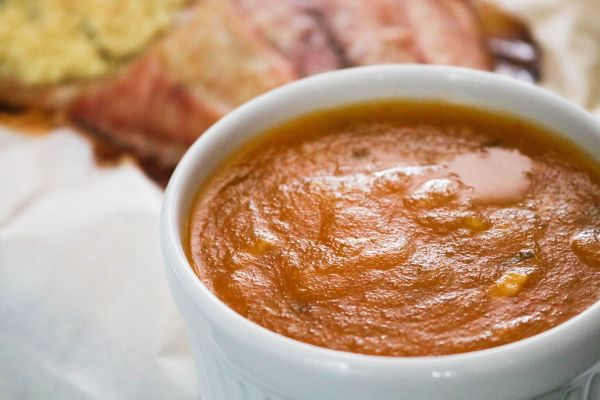

Pirão

•
O pirão é um prato típico da culinária brasileira, especialmente popular nas regiões litorâneas.
É preparado a partir da mistura de farinha de mandioca ou farinha de milho com caldo de cozimento de peixe, frutos do mar ou carne.
O pirão possui uma consistência cremosa e é frequentemente servido como acompanhamento de peixes grelhados, frutos do mar ou carnes.
Informação Nutricional
(valores aproximados por porção):
Calorias: Varia entre 100 a 200 kcal, dependendo do tamanho da porção e dos ingredientes utilizados.
Carboidratos: Aproximadamente 20g
Proteínas: Aproximadamente 2g
Gorduras: Aproximadamente 1g
Fibras: Aproximadamente 2g
Vitaminas e Minerais: O pirão é uma boa fonte de carboidratos e pode conter algumas vitaminas e minerais presentes no caldo utilizado.
R$15,00 | 100g
« Voltar ao menu